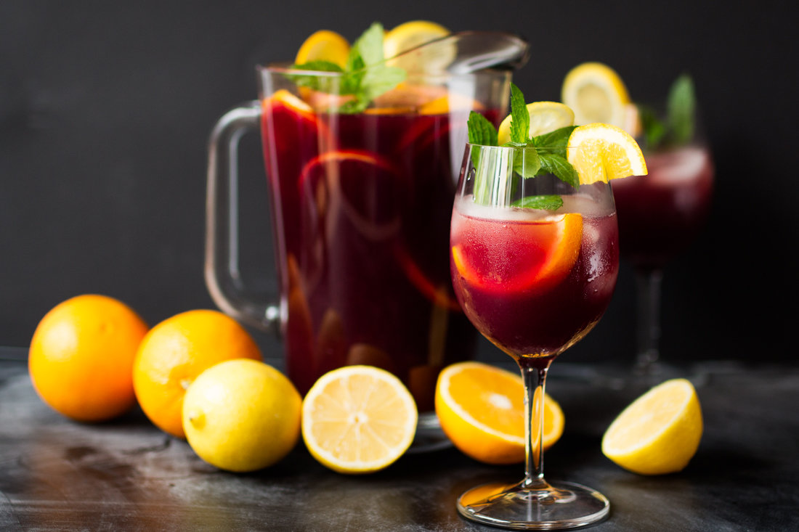

Отличный полезный напиток, этот эликсир сочетает в себе растительные растительные вещества, минералы и витамины с добавлением лимона в нежное цитрусовое чудо, которое будет поддерживать вашу иммунную систему в течение всего дня и ночи.
Не ваш традиционный чай, этот эликсир смешивает мате со специями чая и добавляет дополнительный шоколадный вкус для ощущения вкуса кофеина на льду. Эликсир черного мозга

Хотите улучшить свою память? Попробуйте наш эликсир Black Brain Brew, приготовленный из черного чая Улун и просто немного эспрессо. Ваш мозг поблагодарит вас за повышение.
Присоединяйтесь к нам в любой вечер для этих и других замечательных "эликсиров".
Head First Lounge, без сомнения, является крупнейшим законодателем моды в Webville. Остановитесь, чтобы попробовать эклектичное предложение эликсиров, чаев и кофе, или подождите немного дольше и насладитесь разнообразным кулинарным меню, которое сочетает в себе гармонию вкуса, текстуры и цвета с лучшими в свежих и полезных ингредиентах.
Во время вашего пребывания в зале вы будете наслаждаться плавной смесью окружающих и мистических звуков, наполняя зал и добавляя дополнительное измерение вашему вкусу. Декор окружает вас расслабляющим настроением достопримечательностей прошлого. И не забывайте, что в салоне есть бесплатный беспроводной доступ в Интернет, так что возьмите с собой ноутбук.
Наша гарантия: в зале ожидания мы стремимся предоставить вам, нашему гостю, исключительные впечатления при каждом посещении. Если вы просто заходите, чтобы проверить электронную почту с помощью эликсира, или приехали сюда на необычный ужин, вы обнаружите, что наш знающий обслуживающий персонал уделит внимание каждой детали. Если вы не совсем довольны, сделайте на нас эликсир черничного блаженства.
Но это не все; ночью присоединяйтесь к нам в закулисной комнате, пока наш постоянный диджей крутит на нашем просторном танцполе в стиле тики тематический выбор транс и драм-н-бейсов. Или просто потусоваться в одном из наших удобных белых виниловых кабин в танцевальном баре. Вы можете доставить свои эликсиры из основного зала прямо на танцпол. Если вам хватит ритма, просто возвращайтесь в гостиную, чтобы расслабиться. И независимо от того, где вы находитесь в гостиной, вы всегда будете на связи с нашим беспроводным доступом в Интернет.
Теперь, когда вы посетили зал виртуально , не пора ли проверить нас по-настоящему ? Мы находимся в самом сердце Вебвилля, и мы разработали несколько подробных инструкций , чтобы вы могли попасть сюда в рекордно короткие сроки. Бронирование не требуется; приходите и присоединяйтесь к нам в любое время.
Нас часто спрашивают о музыке, которую мы играем в гостиной, и неудивительно, что это классно. Только для вас, мы держим список на сайте, обновляемый еженедельно. Наслаждаться.
© Head First Lounge, 2005.
Все торговые марки и зарегистрированные торговые марки,
представленные на этом сайте,
являются собственностью соответствующих владельцев.